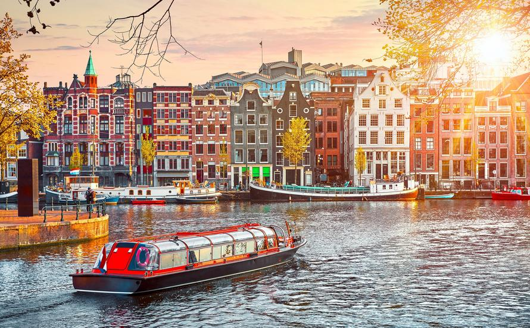

| Name |
Country |
Image |
Description |
| Amsterdam |
Netherlands |
 |
Амстердам – столица Нидерландов, известная сложной сетью каналов, узкими домами с остроконечными крышами и богатым художественным наследием, в том числе XVII века, ставшего золотым в истории этой страны. В городе есть Музейная площадь, где расположены Музей Ван Гога, Рейксмузеум с картинами Рембрандта и Вермеера и Городской музей Амстердама, посвященный современному искусству. Также в Амстердаме очень популярны велосипеды, и здесь большое количество велодорожек. |
| Paris |
France |
 |
Столица Франции Париж – один из главных европейских городов и мировой центр культуры, искусства, моды и гастрономии. В центральной части города, построенной в XIX веке, проходят широкие бульвары и протекает река Сена. Самые известные достопримечательности Парижа – Эйфелева башня и собор Парижской Богоматери в готическом стиле, возведенный в XII веке. Также город славится своими многочисленными кафе и бутиками с одеждой от известных модельеров на улице Фобур-Сент-Оноре. |
| London |
England |
 |
Лондон – столица Англии и Соединенного Королевства. История этого современного города уходит во времена римлян. В самом центре Лондона находится здание парламента – Вестминстерский дворец, а также знаменитая часовая башня Биг-Бен и Вестминстерское аббатство. Эта церковь является местом коронации британских монархов. На противоположном берегу Темзы расположено колесо обозрения "Лондонский глаз", с которого открывается панорамный вид не только на южный берег, но и на весь город. |
| New York |
USA |
 |
Нью-Йорк включает пять боро (районов), расположенных в месте впадения реки Гудзон в Атлантический океан. В центре города расположен густонаселенный Манхэттен – один из крупнейших в мире коммерческих, финансовых и культурных центров. Главные достопримечательности Нью-Йорка – многочисленные небоскребы, в том числе Эмпайр-стейт-билдинг, и огромный Центральный парк. На залитой неоновыми огнями площади Таймс-сквер расположен театр "Бродвей". |
| We have to visit! |